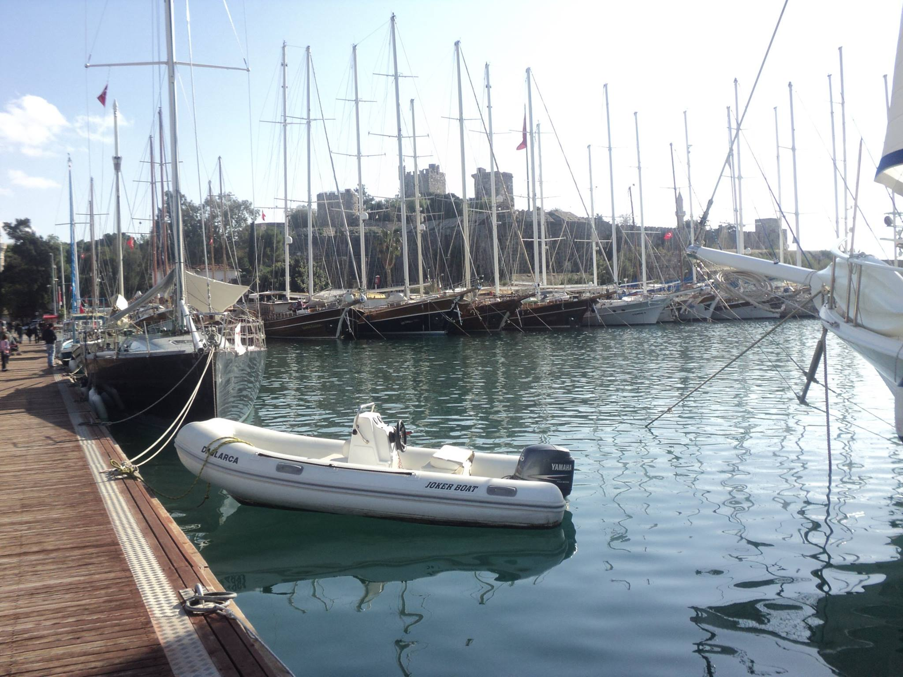
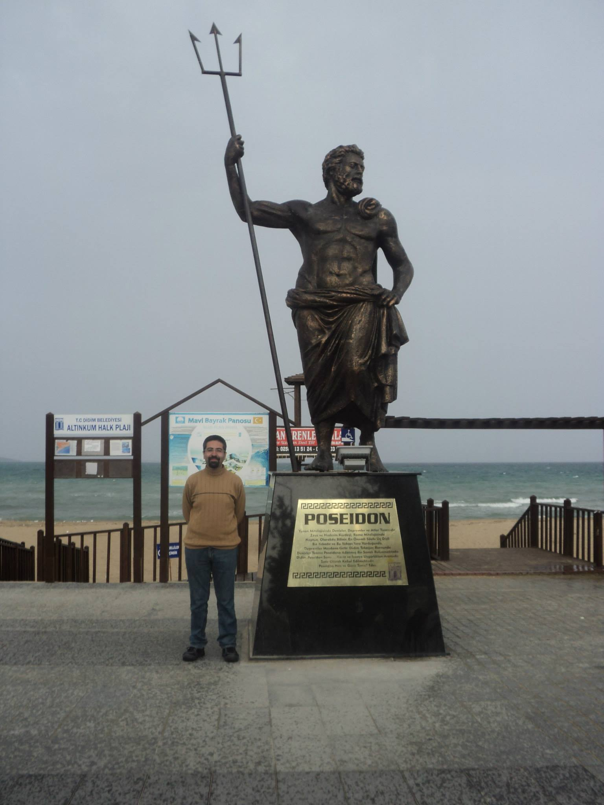
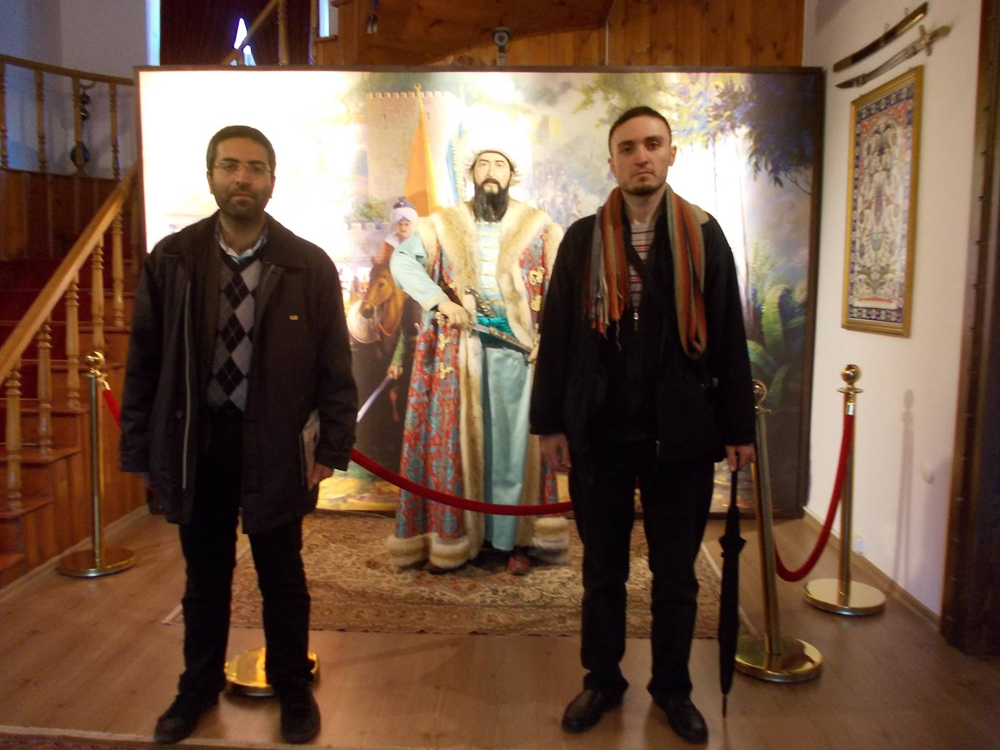
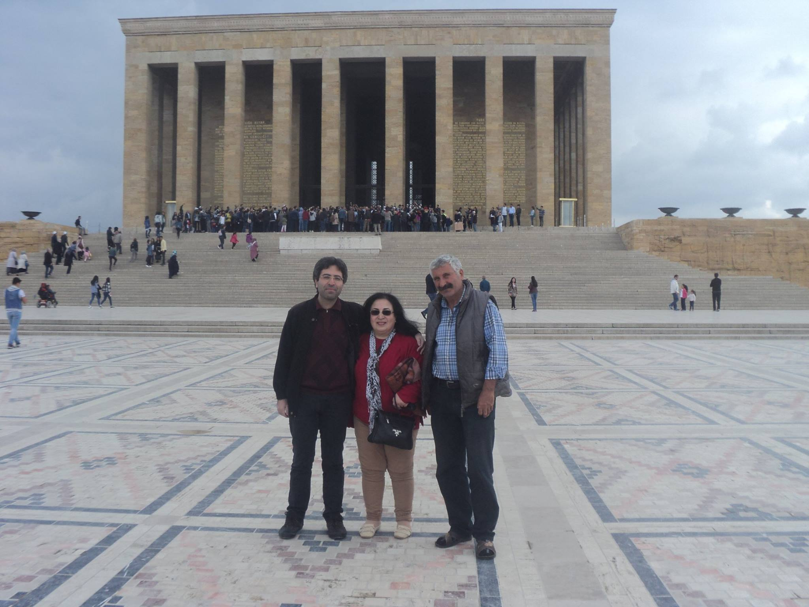

Biography
Dr. Orsan Kilicer is a recent Ph.D. graduate from the Department of Mathematics, Texas A&M University. His academic interests include scientific computing, applied mathematics, and deep learning.
He also enjoys studying philosophy and history. One of his inspirations is the Stoic philosopher-emperor Marcus Aurelius.
Travels
Even though I’ve been in academia for a while (and let’s be honest, I’m as poor as they come—living that academic life!), I’ve still managed to squeeze in some traveling.
I especially enjoy exploring historical sites, and to a lesser extent, natural landscapes and modern cities.
Austin
Austin
Austin
College Station
College Station
Prague/Czechia
Prague
Bodrum
Bodrum
Didyma

Didyma

Didyma in 2014
Trabzon/Turkiye
Trabzon with my long-time friend Can in 2016
Stairs in Trabzon
Tbilisi/Georgia
Tbilisi
tbilisi
Ankara
Ankara - Anıtkabir 2017 with my mother and father